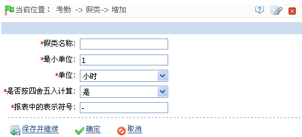

7.6.2 请假---假类管理
单击【考勤】 【假类】，进入假类页面。
【假类】，进入假类页面。

当遇到特殊情况时，人员有可能因为不同的原因需要请假，并希望请假能够在系统统计时显示。在录入请假单的模块中需要选择假类（请假类别）。系统默认设置了5种假类。如果类别不够用，可以新增，新增的类别可以修改或删除。
系统默认假类包括：病假、事假、产假、探亲假、年假、因公外出。
 新增假类：（注意：新增的假类与系统原有假类具有相同的功能。）
新增假类：（注意：新增的假类与系统原有假类具有相同的功能。）
（1）、单击假类页面上的【新增】图标，进入新增假类页面：

根据需要进行参数设置，具体设置方法如下：
假类名称：输入假类名称（最多20个字符）。
单位和最小单位：设置该假类的计量单位和最小取值。单位可设置为“小时”、“分钟”或“工作日”。
是否按四舍五入计算：设置是否按四舍五入计算。
报表中的表示符号：设置该假类在报表中的表示符号。
（2）、设置完成后，单击【确定】按钮，保存并返回假类页面，此时假类列表中将显示刚新增的假类。